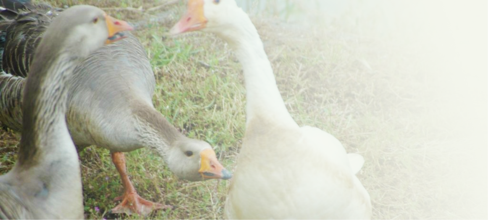
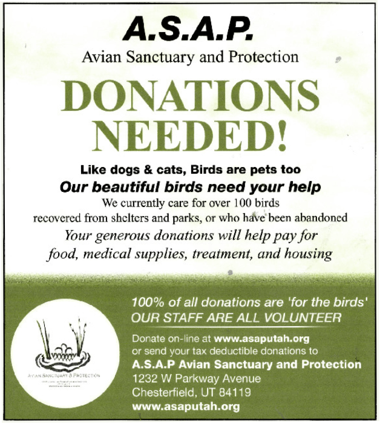

Welcome to ASAP Utah
Avian Sanctuary and Protection

Who We Are
We are an avian rescue sanctuary devoted to domestic and wild non-native birds.
Re-homing, rehabilitating, and education in the Salt Lake, Utah, Davis County, and other
areas of the Western United States for the benefit of birds conditions in urban areas.
We are here for the communities well being and to promote a safe environment for our feathered friends.
Housing, feed, and medical needs are supported by donations. Please help the birds today by making a donation to asap or sponsor a bird here!
Housing, feed, and medical needs are supported by donations. Please help the birds today by making a donation to asap or sponsor a bird here!